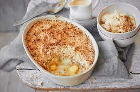

Apple Crumble

The ultimate in comfort home cooking. This apple crumble is both delicious and quick to make.
Ingredients
For the crumble:
- 300g plain flour, sieved with a pinch of salt
- 170g brown sugar
- 200g unsalted butter
For the filling:
- 450g apples, peeled, cored and cut into pieces
- 60g brown sugar
- 1 tbsp plain flour
- 1 pinch cinnamon
Steps
- Preheat the oven to 180c/Gas mark 4.
- Place the flour and sugar in a large bowl and mix well. Taking a few cubes of butter at a time rub into the flour mixture. Keep rubbing until the mixture resembles breadcrumbs.
- Place the fruit into a large bowl and sprinkle over the sugar,flour, and cinnamon. Stir well being careful not to break up the fruit.
- Spoon the fruit mixture into an ovenproof dish, then sprinkle the crumble mixture on top.
- Bake in the oven for 40-45 minutes until the crumble is browned and the fruit mixture is bubbling.